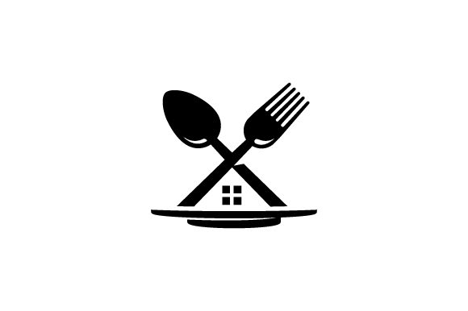

Restoranti i jonë MePaThika është restorant i themeluar pas luftes i cili kemi vetëm dy lokacione ajo në Prishtinë te Bregu i Diellit dhe në Kodrën e trimave. Kemi filluar nga viti 2015. Jemi edhe FastFood dhe restorant. Per derisa erdhi pandemia e COVID-19 kemi filluar me devlivery dhe ne ende vazhdojmë. Kemi punuar që 5 vjet. Kemi krijuar website-in rreth restorantit tone për të bërë rezervime dhe për të porositur nga shtëpia me shërbimin delivery. Lart e kemi paraqitur 3 fotografi si duken dy restorantet tona. Emri i jonë MePaThika na ra ndërmend me anë të emrit Papirun dhe Me lugë këto dy restorante që janë në Prishtinë. Pse mos me pas edhe një restorant me përmbajtë fjalën Thikë me ose pa. Dhe i kemi grumbullu këto dhe e kemi formuar emrin MePaThika. Në këtë restorant kemi ushqime si pjata kryesore, ushqime të shpejta dhe ëmbëlsira.
